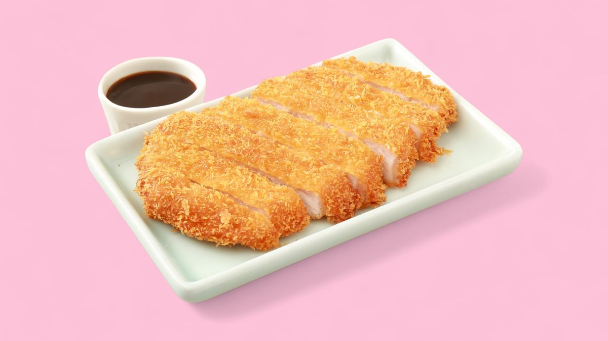
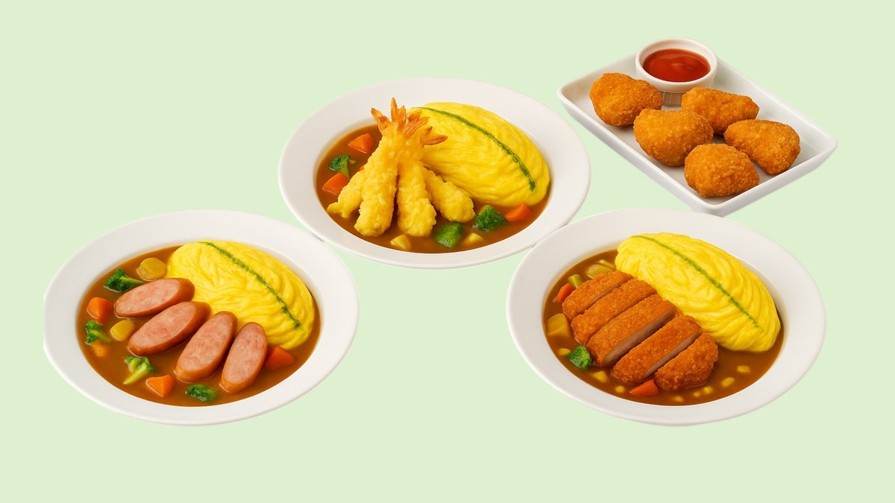
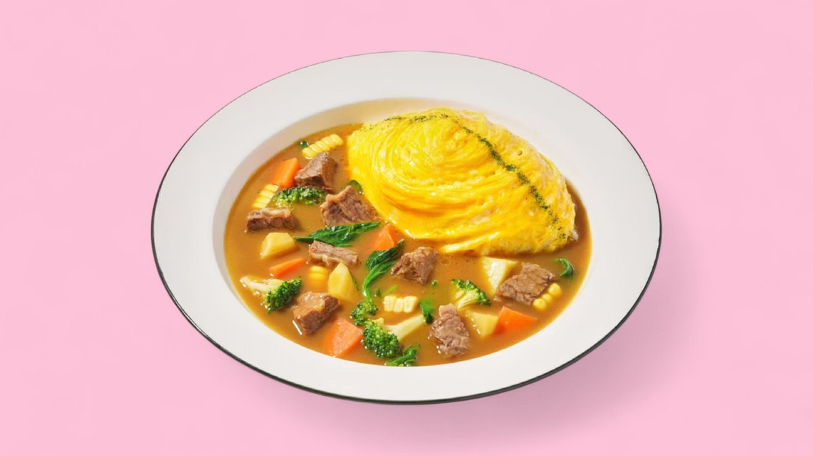
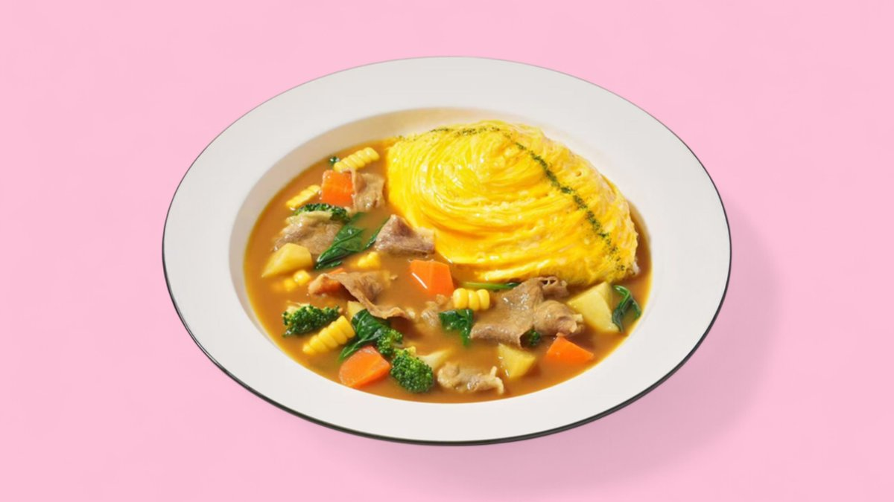

Tonkatsu (porc) · omurice
Escalope de porc panée croustillante, omelette omurice, curry.
18,70 € à confirmer
Un roux épais et parfumé, du riz, une omelette omurice fondante et une pièce croustillante. Réconfortant, authentique, préparé avec soin.

Photos : les plats signature du restaurantDoux en bouche, puis franchement chaleureux. Ici l'épice se prend au sérieux — dites-nous votre niveau.
Plats et prix relevés sur Wolt — à confirmer avec l'établissement.

Escalope de porc panée croustillante, omelette omurice, curry.

Entrecôte de bœuf saisie, riz, omurice et roux de curry.

Poitrine de bœuf fondante mijotée dans le curry.

Bouchées de poulet croustillantes sur curry et omurice.
Poulet pané, croustillant, l'incontournable du katsu curry.
Canard croustillant, roux de curry riche et parfumé.
Crevettes en tempura légère, curry japonais.
Version végétarienne, légumes et roux de curry.

Niché dans la Gare, Chinai's Curry mise sur un décor soigné, très « Instagram », et une cuisine de réconfort qui va droit au but : le curry japonais, épais et parfumé, servi sur un riz nappé d'une omelette omurice.
La signature ? Cette ligne verte dessinée sur l'omurice, et la pièce croustillante posée dans le roux. Simple, généreux, réconfortant.
* Horaires relevés sur Wolt (peuvent refléter la livraison) — à confirmer avec l'établissement.